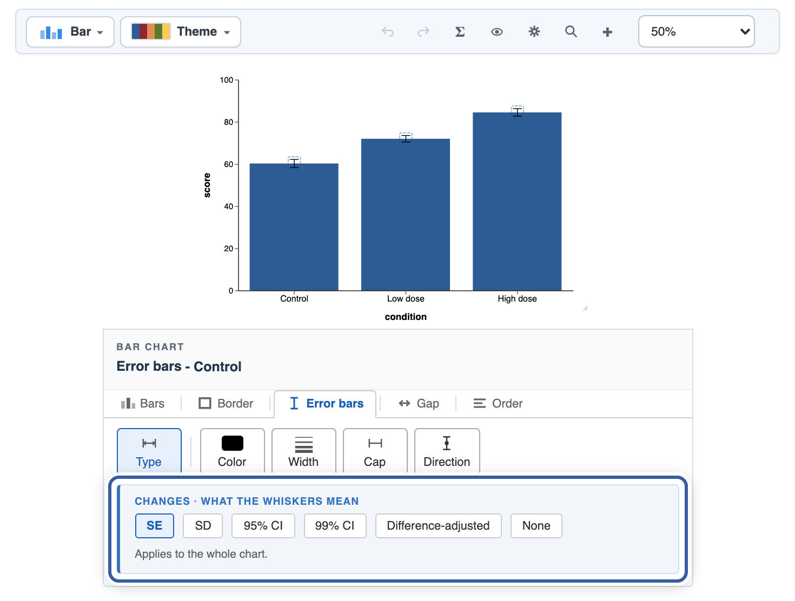
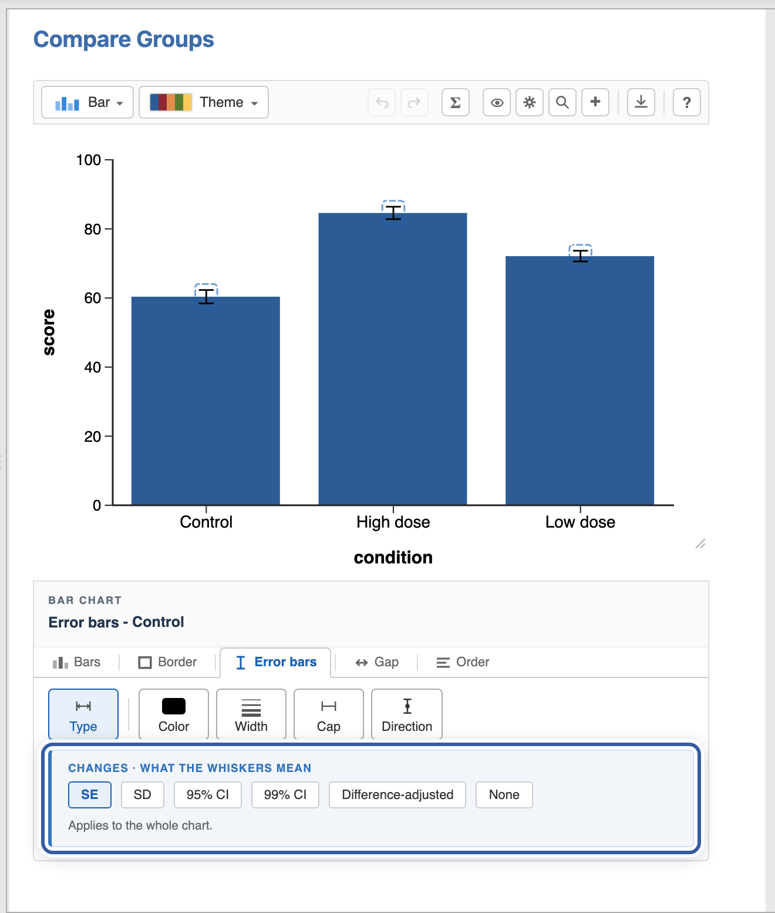
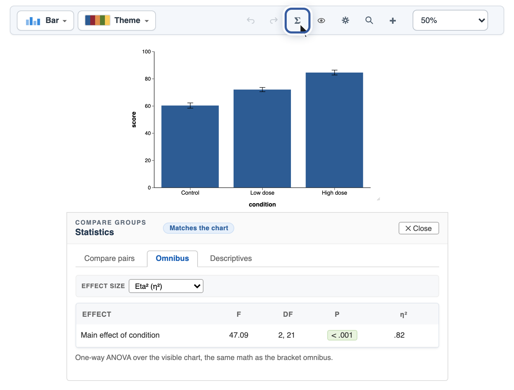
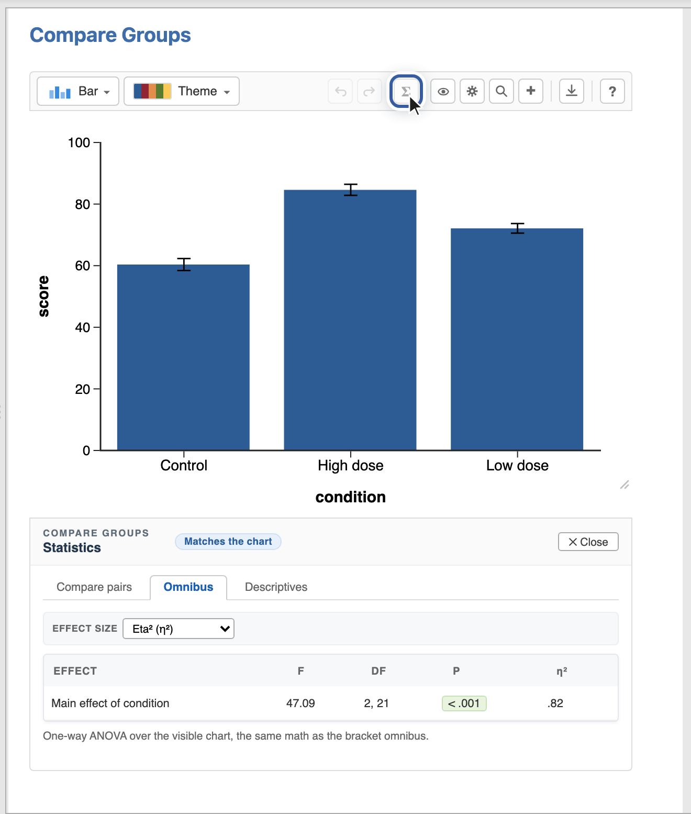
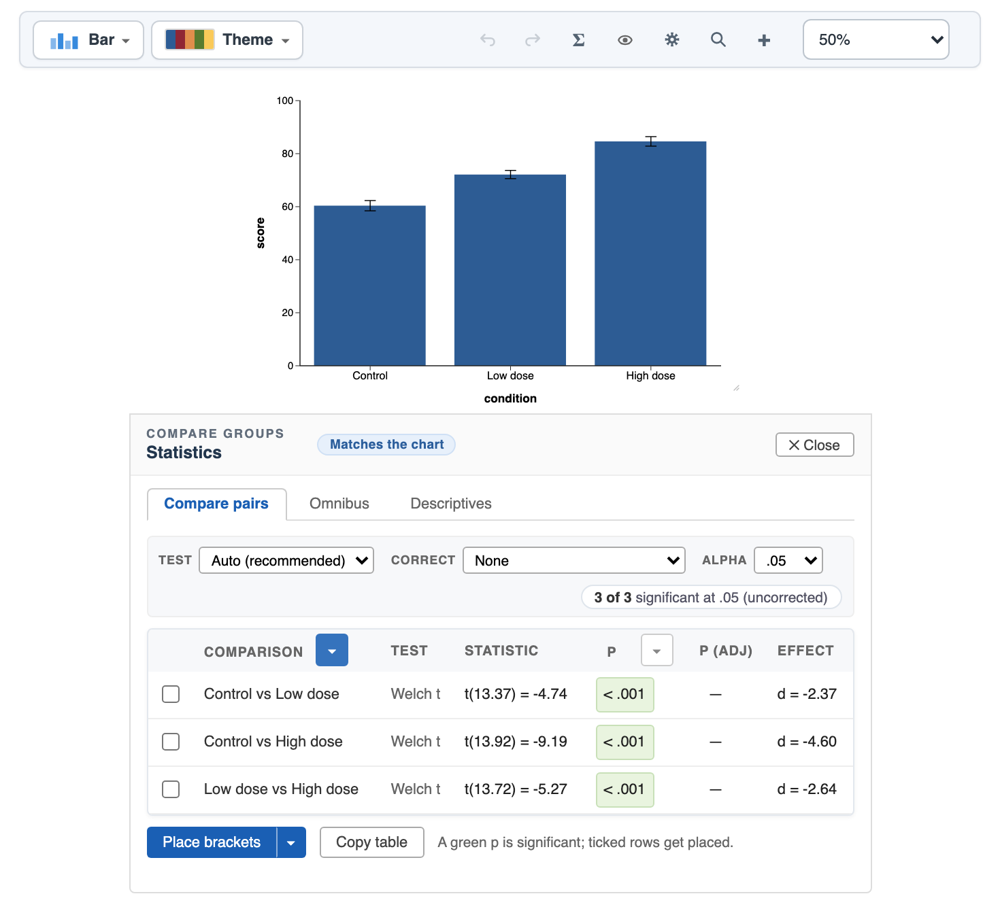
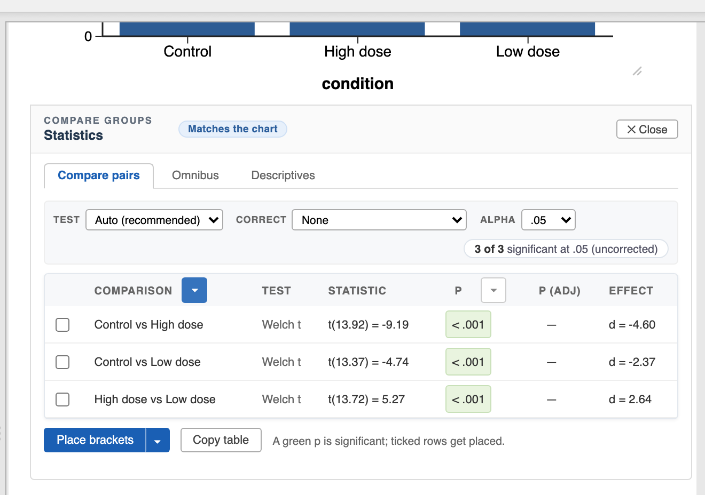
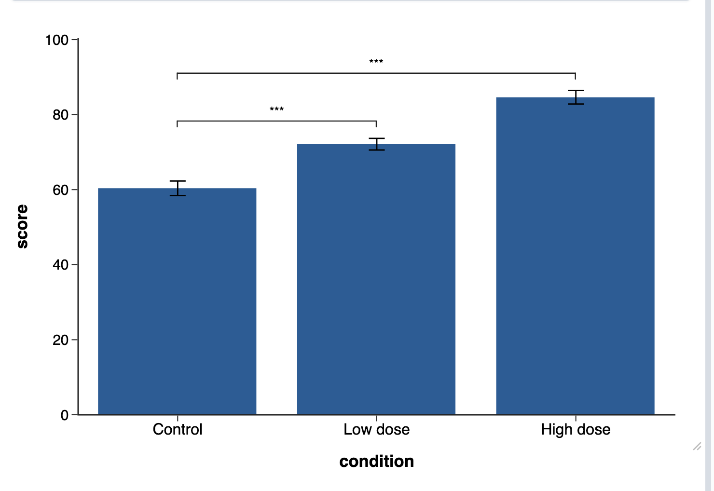
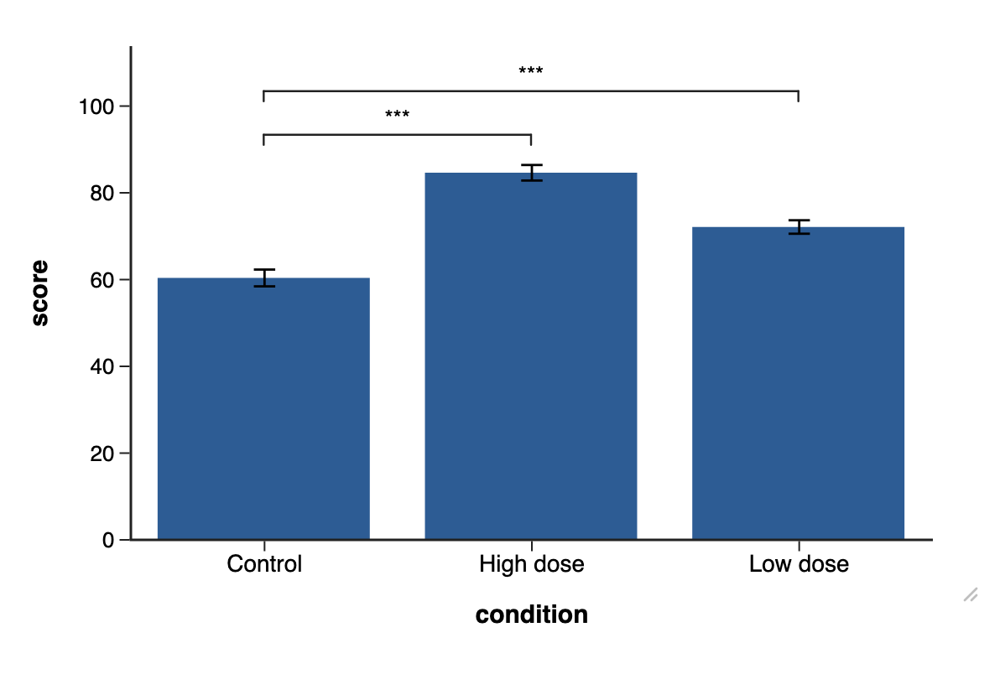

Pandion Plots
Pandion Plots
Learn · Statistics
From chart to conclusion.
Your chart shows a difference; this guide is about saying whether it is real. Starting from the dose-response bar chart of the getting-started guidegetting-started guide, you will read the error bars, run the overall test, compare the pairs with corrected p values, and place significance brackets, all without leaving the chart. Every step happens in the chart editor itself, so the flow is the same on both platforms; the toggle picks whose pictures you see.
1. Know what your error bars say
Click any error bar and its panel opens on the Type strip: the setting that decides what the whiskers mean. It sits in a tinted Changes band because switching it changes what the chart claims, not how it looks.


Difference-adjusted is the odd one out and worth knowing: each interval is scaled for COMPARING two means, so if one group’s mean falls outside another group’s interval, those two groups differ at p < .05. Plain CI bars cannot be read that way.
2. Run the overall test
The Σ Stats button on the chart toolbar opens the Statistics panel: three tabs, Compare pairs, Omnibus, and Descriptives. Omnibus answers the first question: do the group means differ at all?


The Matches the chart badge is a promise: every number in this panel describes the chart as drawn. Hide a point or change a variable and the panel recomputes.
3. Compare the pairs
The Compare pairs tab lists every pair of groups with a test, the statistic, the p value, and an effect size. A green p is significant at your Alpha; the pill on the right keeps the honest tally.


Reporting several comparisons at once? Set Correct (Holm is a safe default; Bonferroni, Benjamini-Hochberg, Tukey, Games-Howell, and Dunnett are there too). The p (adj) column fills in, and the green chips follow the adjusted values, so the table can never quietly report uncorrected significance.
4. Place the brackets
Tick the comparisons that belong on the figure and click Place brackets. Each ticked row becomes a significance bracket on the chart, laid out so they never collide.


Placed brackets are ordinary chart annotations: drag one to move it, click it to restyle or change its test, and remove it from its own panel. Adding a bracket by hand works too, from the + menu’s Sig. bracket; its p value computes from the same engine.
5. The numbers behind the chart
The Descriptives tab is the per-group table (N, mean, SD, SE, and friends), and Copy table puts any of these tables on the clipboard in a form Excel and Word paste cleanly. If you exclude or hide data, the panel says so rather than silently changing its basis.
That is the whole loop: read the error bars, test overall, compare pairs, place brackets, report. Next in the series: which chart for which data, a tour of all seven analyses. All the guides live on the Learn page.